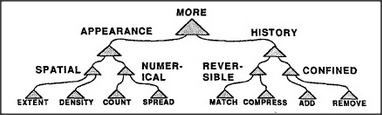
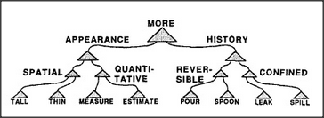

Think how many meanings more must have! We seem to use a different one for every sort of thing we know.
More red. More loud. More swift. More old. More tall. More soft. More cruel. More alive. More glad. More wealthy.
Each usage has a distinct sense, involving different agencies. How could all these ways to make comparisons get grouped into just one society? Here's a Society-of-More a child might use to deal with that egg cup problem.
This society has two main divisions. In its Appearance division, a Spatial subdivision considers both the increased extent occupied by the spread-out eggs and also their thinned-out appearance or reduced density. In the case of those spread-out eggs, these conflict — and the Spatial agency withdraws. Then, if the child can count, Numerical decides; otherwise the History division applies some agents that use memories of recent happenings. If some of the eggs were rolled away, Confined would say that their amount is no longer the same; if the eggs were merely moved around, Reversible would claim that their amount cannot have changed.
To solve the water jar problem, the Society-of-More would need other kinds of lower-level agents:
You might complain that even if we needed these hordes of lower-level agencies to make comparisons, this system has too many middle-level managers. But those mountains of bureaucracy are more than worth their cost. Each higher-level agent embodies a form of higher-order knowledge that helps us organize ourselves by telling us when and how to use the things we know. Without a many layered management, we couldn't use the knowledge in our low-level agencies; they'd all keep getting in one another's way.